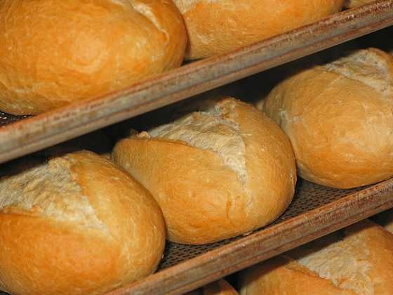
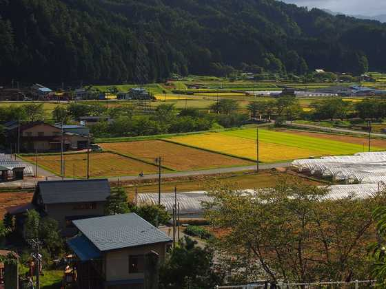
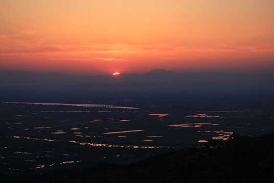

にじぱん
朝9時、まちの小さなパン屋に、ひとつ明るい色を。
岐阜県瑞浪市高月町のパン屋さん


お店のこと
「にじぱん」は、岐阜県瑞浪市高月町にあるパン屋さんです。Instagramでは「9時より営業しています!」と案内されています(2026年11月確認)。
店名の「にじ」の由来は確認できていません。ここでは制作側のイメージとして、雨上がりの空にかかる虹のように、暮らしの中にふっと明るさを添えるパン屋さん、という雰囲気で全体の色をそろえました。
創業の経緯・こだわり・スタッフなどは準備中です。最新の情報はInstagramをご覧ください。





口コミ(イメージ例)
以下は制作側が作成したイメージ例で、実際のお客様の声ではありません。
イメージ例
朝から開いているので、通勤前に立ち寄れるのがうれしいです。袋を開けるとパンの香りがふわっと広がります。
イメージ例
小さなお店で、何を選ぼうか迷う時間も楽しいです。家に持ち帰って家族とわけて食べました。
イメージ例
この日はどんなパンが並んでいるのか、Instagramで見てから出かけるのが楽しみになりました。
アクセス
| 店名 | にじぱん |
|---|---|
| 住所 | 〒509-6126 岐阜県瑞浪市高月町2丁目58 |
| 電話 | 準備中 |
| 営業時間 | 9時より営業(閉店時刻は準備中) |
| 定休日 | 準備中 |
| @niji.pan |
写真クレジット
- 01_bread_rolls_tray.jpg:ロールパン / Kerstin Riemer / CC0 / 出典
- 03_wheat_ears.jpg:実った小麦の穂 / Jazzmaster1997 / CC BY 4.0 / 出典
- 04_bread_wood_board.jpg:木の板に置いたパン / Shisma / CC BY 4.0 / 出典
- 05_bread_and_grains.jpg:パンと穀物 / Unknown photographer / Public domain / 出典
- 06_flour_and_wheat.jpg:小麦粉と小麦 / congerdesign / CC0 / 出典
- 07_boule.jpg:丸いパン / Lehightrails / CC0 / 出典
- 08_sourdough.jpg:天然酵母風のパン / Missvain / CC0 / 出典
- 11_baskets_and_peel.jpg:焼き上がったパンとかご / Wald1siedel / CC BY-SA 3.0 / 出典
- 12_bread_slice.jpg:スライスしたパン / Rebecca Siegel / CC BY 2.0 / 出典
- 13_satoyama_hida.jpg:岐阜の里山風景 / Seth Vidal / CC BY-SA 2.0 / 出典
- 14_kiso_river_view.jpg:笠置山からの眺め / Alpsdake / CC0 / 出典
- 15_kiso_mountains.jpg:木曽の山並み / Alpsdake / CC0 / 出典
- 16_kasagi_ena_view.jpg:笠置山の眺め / Alpsdake / CC0 / 出典
- 17_yoro_sunrise.jpg:恵那山と朝日 / Alpsdake / CC BY-SA 4.0 / 出典